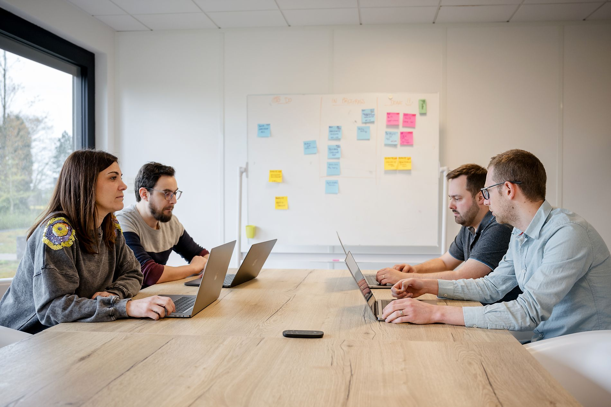

Mohammed
Elaouali
Développeur backend / full stack junior
Disponible pour un premier emploi
Développeur logiciel junior · Verviers, Belgique
Je transforme des besoins métier en applications utiles, robustes et maintenables — avec une expertise forte en Java, Spring Boot et API REST.
Le parcours, en mouvement
Faites défiler pour traverser les étapes qui structurent mon profil : formation, expérience et projets.
Faites défilerUn développeur backend / full stack orienté Java Spring Boot, au travail devant son environnement de code.
Bachelier en développement d’applications — HEPL, Haute École de la Province de Liège.
Stage développeur chez Yelido : Java, Spring Boot, PostgreSQL, REST API, Angular, PrimeNG, WebSocket, AWS, Docker, Liquibase, Git, Maven et Bitbucket.
Une introduction visuelle vers les projets détaillés plus bas dans le portfolio.
Présentation
Ma première expérience professionnelle représente trois mois sur un CV, mais elle ne résume ni ma capacité d’apprentissage, ni le niveau d’exigence que j’applique à mes projets.
Je suis développeur logiciel, formé à la conception d’applications de bout en bout : analyse du besoin, modélisation des données, développement back-end, interface, tests et documentation.
Curieux, autonome et rigoureux, j’aime comprendre le métier derrière le code. Je cherche aujourd’hui une première opportunité où contribuer rapidement, apprendre auprès d’une équipe expérimentée et faire grandir des produits réellement utilisés.
Expérience professionnelle

Immersion au sein d’une équipe qui conçoit des logiciels métier sur mesure. Cette expérience m’a appris à travailler dans un contexte professionnel, à comprendre un code existant et à livrer des évolutions utiles avec méthode.
Photo et identité visuelle : Yelido.
Compétences techniques
L’évaluation reflète mon niveau actuel et reste volontairement réaliste.
Architecture en couches, contrôleurs, services, sécurité, validation, JPA/Hibernate et API REST.
Modélisation relationnelle, requêtes, contraintes, intégrité et intégration applicative.
API métier, Entity Framework Core, principes SOLID et Clean Architecture.
Interfaces responsives, accessibles et connectées à des services web.
Composants, services, appels API, interfaces métier et communication avec un back-end Spring Boot.
Programmation orientée objet, algorithmique, mémoire et outils en ligne de commande.
Sélection de projets
Cette section sera complétée projet par projet, avec les bons liens GitHub, les captures et les explications.
Projet à définir
Projet à définir
Projet à définir
Projet à définir
Projet à définir
Projet à définir
Projet à définir
Formation
Orientation Développement d’applications · diplômé
Haute École de la Province de Liège
Seraing, Belgique
Ma motivation
Mon parcours m’a appris à être polyvalent, à chercher les bonnes réponses et à ne pas abandonner face à un problème technique. Je veux mettre cette énergie au service d’une entreprise qui valorise la qualité, la collaboration et l’apprentissage continu.
Mon objectif est simple : devenir rapidement un collègue fiable, capable de prendre en charge des fonctionnalités, de communiquer clairement et de contribuer à des logiciels utiles.
Échangeons sur votre opportunitéContact
Une opportunité junior, une mission ou simplement une question ? Je répondrai avec plaisir.